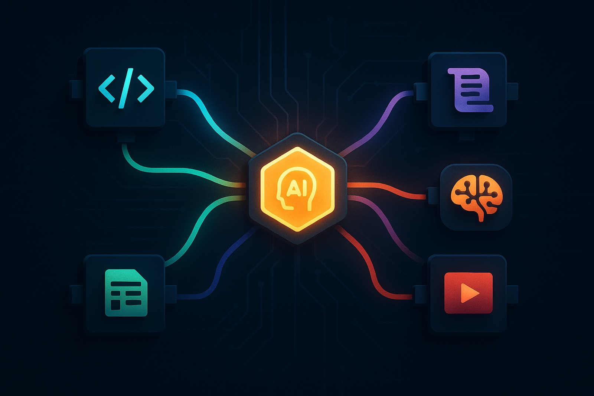

한 주 동안 GitHub 트렌딩이 말하고 있는 방향이 있다. “AI 에이전트가 무엇을 할 수 있느냐”가 아니라 “에이전트에게 무엇을 쥐여줄 것인가”로 무게중심이 넘어가고 있다. 코드를 짜는 에이전트, 문서를 편집하는 에이전트, 프롬프트를 해부하는 에이전트, 기억을 갖는 에이전트, 비디오를 보는 에이전트 — 다섯 개의 축이 동시에 벌어지고 있다.
이 글은 2026년 7월 둘째 주, GitHub 트렌딩 상위에 오른 다섯 개 저장소를 하나씩 들어가서 읽고, 실제로 무엇을 하는 도구인지, 왜 지금 사람들이 모여드는지를 정리한 보고서다. 끝에 “어떤 것부터 당장 써볼 수 있는가”도 적어뒀다.
스킬셋을 주입하면 에이전트가 시니어 엔지니어처럼 행동한다 — addyosmani/agent-skills
addyosmani/agent-skills · ★ 73,711 · +1,322/day · JavaScript
Addy Osmani(Google Chrome 팀)가 만든 이 저장소는, 한마디로 **“시니어 엔지니어가 코드를 리뷰하고 배포할 때 따르는 절차를 에이전트에게 주입하는 스킬 팩”**이다. 스킬이란 건 그냥 마크다운 파일이다. 하지만 그 안에 검증 게이트, 반합리화 표(anti-rationalization table), 승인 기준이 구조화되어 들어 있다.
핵심은 8개의 슬래시 커맨드가 소프트웨어 개발 라이프사이클을 그대로 매핑한다는 거다.
| 단계 | 커맨드 | 원칙 |
|---|---|---|
| 정의 | /spec | 코드보다 명세 먼저 |
| 계획 | /plan | 작고 원자적인 태스크 |
| 구현 | /build | 한 번에 한 슬라이스 |
| 검증 | /test | 테스트는 증명이다 |
| 리뷰 | /review | 코드 건강도 개선 |
| 감사 | /webperf | 최적화 전에 측정 |
| 단순화 | /code-simplify | 영리함보다 명확 |
| 배포 | /ship | 빠를수록 안전하다 |
총 24개 스킬이 들어 있다. Claude Code, Cursor, Codex, Copilot, Gemini CLI 등 70개 이상의 에이전트에 npx skills add addyosmani/agent-skills 한 줄로 설치된다. 에이전트가 알아서 스킬을 읽고, 상황에 맞는 절차를 따른다.
왜 사람들이 모여드는가 — 에이전트에게 “잘 해라”라고 말하는 대신, 어떻게 해야 잘하는지를 체계적으로 가르쳐주는 프레임워크이기 때문이다. 코딩 에이전트를 실무에 쓰는 분들에게 당장 실효성이 있다.
설치는 간단하다:
npx skills add addyosmani/agent-skills # 전체 24개 스킬
npx skills add addyosmani/agent-skills --list # 하나씩 골라서Claude Code에서는 플러그인 마켓플레이스로도 설치된다:
/plugin marketplace add addyosmani/agent-skills
/plugin install agent-skills@addy-agent-skills
에이전트가 Word·Excel·PowerPoint를 CLI로 다룬다 — iOfficeAI/OfficeCLI
iOfficeAI/OfficeCLI · ★ 11,570 · +1,712/day · C#
이건 일일 스타 증가율이 트렌딩 전체 중 최고다. 하루에 1,712개의 스타가 늘고 있다.
OfficeCLI는 AI 에이전트가 Word, Excel, PowerPoint 파일을 CLI로 읽고 편집하게 해주는 도구다. 단일 바이너리로 배포되고, Office가 설치되어 있을 필요가 없다. 오픈소스다.
가장 인상적인 건 내장 HTML 렌더링 엔진이다. 에이전트가 문서를 편집한 뒤 “어떻게 보이는지”를 PNG나 HTML로 렌더링해서 확인할 수 있다. 렌더 → 확인 → 수정 루프가 에이전트 안에서 닫힌다.
# 파워포인트 만들고 슬라이드 추가
officecli create deck.pptx
officecli add deck.pptx / --type slide --prop title="Q4 Report"
officecli watch deck.pptx # 브라우저에서 실시간 미리보기지원 포맷은 이렇다:
| 포맷 | 읽기 | 수정 | 생성 |
|---|---|---|---|
| Word (.docx) | ✅ | ✅ | ✅ |
| Excel (.xlsx) | ✅ | ✅ | ✅ |
| PowerPoint (.pptx) | ✅ | ✅ | ✅ |
Excel에 formula 350+ 내장 함수, 피벗 테이블, 슬라이서, 조건부 서식까지 지원하고, PowerPoint에 모핑 전환, 3D 모델(.glb), Mermaid 다이어그램 → 네이티브 도형 변환까지 된다. python-pptx로 50줄 짜던 게 한 줄이 된다.
왜 폭발적인가 — “AI가 문서를 만들 수 있다”는 약속은 많은 사람이 들어왔지만, 실제로 에이전트가 만든 .pptx를 열어보면 깨져 있는 경우가 대부분이었다. OfficeCLI는 렌더링 엔진을 내장해서 에이전트 스스로 결과를 “볼 수 있게” 만들었다. 그 차이가 크다.
설치:
# macOS / Linux
curl -fsSL https://raw.githubusercontent.com/iOfficeAI/OfficeCLI/main/install.sh | bash
# 또는
brew install officecli주요 AI 제품의 시스템 프롬프트를 해부한다 — asgeirtj/system_prompts_leaks
asgeirtj/system_prompts_leaks · ★ 54,012 · +1,226/day · JavaScript
Claude Opus 4.8, Claude Sonnet 5, Claude Fable 5, GPT-5.5(Thinking/Instant/Codex), Gemini 3.5 Flash, Grok Expert, Cursor, Perplexity Computer — 이 저장소는 주요 AI 제품의 시스템 프롬프트를 추출해서 아카이브하고 있다.
The Washington Post에서도 소개된 적이 있다(2026년 5월 11일자 “See the hidden rules behind AI”).
왜 유용한가. 각사가 어떤 가드레일을 걸고, 어떤 톤을 지시하고, 어떤 도구 사용 규칙을 프롬프트에 박아넣었는지를 비교 분석할 수 있다. 예를 들어 Claude Code의 프롬프트를 읽어보면, Anthropic이 에이전트에게 “어떤 상황에서 사용자에게 묻고 어떤 상황에서 자율적으로 행동할 것인지”를 매우 상세하게 지시하고 있다는 걸 알 수 있다.
최근 추가된 것들:
| 항목 | 날짜 |
|---|---|
| Claude Sonnet 5 시스템 프롬프트 | 2026-07-01 |
| Claude Design (Opus 4.8, 48 tools + 16 skills) | 2026-06-26 |
| GitHub Copilot for macOS | 2026-06-18 |
| GPT-5.5 Codex 전체 프롬프트 | 2026-06-18 |
| Claude Opus 4.8 ↔ Fable 5 Diff | 2026-06-09 |
연구자에게는 프롬프트 엔지니어링의 레퍼런스다. 개발자에게는 자기 에이전트의 프롬프트를 설계할 때 구조적 참고서가 된다. “최고의 프롬프트 엔지니어링”이 무엇인지, 각사가 실제로 어떻게 쓰고 있는지를 엿볼 수 있다.
외부 API 없이 에이전트에게 장기기억을 — TencentCloud/TencentDB-Agent-Memory
TencentCloud/TencentDB-Agent-Memory · ★ 7,560 · +351/day · TypeScript
에이전트가 긴 작업을 하면 컨텍스트가 쌓이고, 토큰이 폭발한다. 이걸 해결하는 로컬 장기기억 파이프라인이다. 외부 API 의존성이 zero라는 게 핵심이다.
구조는 4단계 계층으로 되어 있다:
단기기억 계층 — 아래층은 원본 도구 로그(refs/*.md)를 저장하고, 중간층은 스텝 단위 요약(jsonl), 위층은 Mermaid 캔버스로 상태를 압축한다. 에이전트는 맨 위층만 컨텍스트에 올리고, 필요할 때 node_id로 아래층을 파고 내려간다.
장기기억 계층 — L0 Conversation(원본 대화) → L1 Atom(원자 사실) → L2 Scenario(장면 블록) → L3 Persona(사용자 프로필). 플랫 벡터 더미가 아니라 의미 피라미드다.
OpenClaw와 통합했을 때의 벤치마크:
| 벤치마크 | 기존 성공률 | 플러그인 적용 | 상대 향상 | 토큰 절감 |
|---|---|---|---|---|
| WideSearch | 33% | 50% | +51.52% | −61.38% |
| SWE-bench | 58.4% | 64.2% | +9.93% | −33.09% |
| PersonaMem | 48% | 76% | +59% | — |
핵심 통찰 — 기억은 “모든 것을 쌓아두는” 게 아니다. 사람이 같은 말을 반복하지 않아도 되는 것이 기억의 본질이라고 이 저장소는 말한다. SOP, 프로젝트 배경, 도구 사용 규칙, 출력 포맷 — 이런 것을 에이전트가 “기억”하게 만들어서, 사람이 판단과 창작에 집중할 수 있게 한다.
설치:
openclaw plugins install @tencentdb-agent-memory/memory-tencentdb
openclaw gateway restartOpenClaw뿐 아니라 Hermes 에이전트도 지원하고, 로컬 SQLite + sqlite-vec가 기본 백엔드다.
Claude에게 비디오 시청 능력을 — bradautomates/claude-video
bradautomates/claude-video · ★ 5,946 · +948/day · Python
Claude는 웹페이지를 읽고, 스크립트를 실행하고, 리포를 탐색할 수 있다. 하지만 기본적으로 비디오를 볼 수는 없다. YouTube 링크를 던지면 제목이나 자막으로 추측할 뿐이다.
이 도구는 Claude에게 /watch 커맨드를 추가한다. URL이나 로컬 파일을 던지면:
- yt-dlp로 자막을 먼저 확인 (공개 자막이 있으면 다운로드 없이 처리)
- ffmpeg으로 프레임 추출 (장면 변화 감지 또는 키프레임)
- Whisper로 타임스탬프 기록 전사 (자막이 없을 때, Groq 우선)
- 프레임 + 전사를 Claude에게 전달
/watch https://youtu.be/dQw4w9WgXcQ what happens at the 30 second mark?
/watch bug-repro.mov when does the UI break?
/watch https://youtu.be/<long-video> summarize this
프레임 예산은 영상 길이에 따라 자동 조정된다:
| 영상 길이 | 기본 프레임 수 | 밀도 |
|---|---|---|
| ≤30초 | ~30 | 매우 밀집 |
| 1–3분 | ~60 | 쾌적 |
| 3–10분 | ~80 | 희소하지만 작동 |
| >10분 | 100 (캡) | “sparse scan” 경고 |
중복 프레임 자동 제거(dedup)도 들어 있다. 같은 슬라이드가 90초간 유지되는 화면 녹화에서 수십 장의 중복 프레임이 나오는 걸 방지한다. 16×16 흑백 썸네일로 평균 휘도 차이를 계산해서 임계값 2.0 이하면 드랍한다.
왜 의미있는가 — 멀티모달 에이전트의 사각지대 중 하나가 “비디오”였다. 이 도구는 비디오 콘텐츠 자동 분석·요약 워크플로우를 당장 쓸 수 있는 형태로 만들어놨다. 경쟁사 비디오 분석, 버그 재현 영상 진단, 강의/코스 노트화 — 적용 지점이 명확하다.
설치:
# Claude Code
/plugin marketplace add bradautomates/claude-video
/plugin install watch@claude-video
# Codex, Cursor, Copilot, Gemini CLI 등
npx skills add bradautomates/claude-video -g어디로 가고 있는가 — 다섯 개의 신호가 가리키는 방향
이 다섯 개의 저장소를 나란히 놓고 보면, 하나의 패턴이 보인다. 2026년 중반, AI 에이전트 생태계의 관심사가 “에이전트가 무엇을 할 수 있느냐”에서 “에이전트에게 무엇을 쥐여줄 것인가”로 이동하고 있다.
- 스킬을 주면 시니어 엔지니어처럼 일한다 (agent-skills)
- 도구를 주면 문서를 만든다 (OfficeCLI)
- 프롬프트를 해부하면 설계 전략이 보인다 (system_prompts_leaks)
- 기억을 주면 반복을 없앤다 (TencentDB-Agent-Memory)
- 비디오를 보여주면 시각 정보를 이해한다 (claude-video)
모델 자체의 능력은 이미 충분히 강력하다. 남은 문제는 에이전트를 둘러싼 인프라와 절차와 도구를 어떻게 설계하느냐다. 이 다섯 개의 저장소가 각자 다른 각도에서 같은 질문에 답하고 있다.
참고 링크: